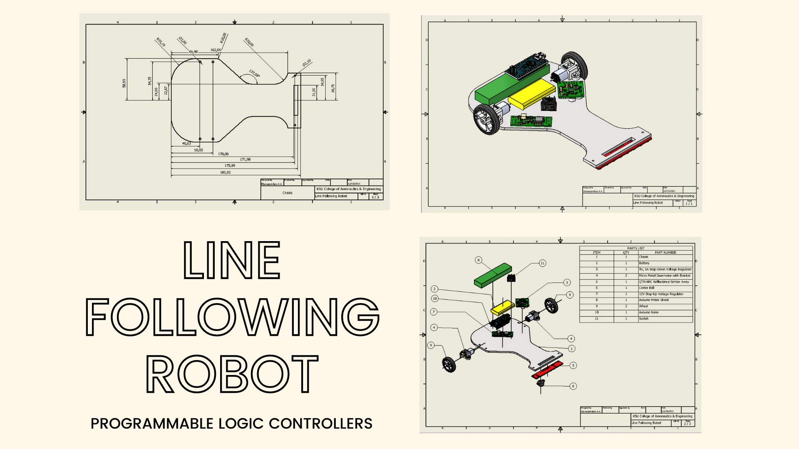

Featured
A Line Follower Robot is an automated guided vehicle, which follow a visual line embedded on the floor. This project involves coding using an Arduino Nano, understanding of Programmable Logic Controllers, utilizing a Gantt chart, compiling & acquiring a Bill Of Materials (B.O.M.), calculating the essential metrics, creating a circuit diagram, and most importantly - building the full robot using AutoCAD Inventor.

Air Guide is a next-generation airport essential that helps address transporting bags through the airport, right from arrival. This is an effective tool in providing passengers with the option of arriving at the airport and proceeding into the airport for security checks only, then takeoff. With digital interaction and mobility in cohesion, Air Guide is ‘Check-In’ reimagined and en-route to virus proof airports. AirGuide was designed solely by Oluwasemilore 'Soore' Akintelure. (C) All rights reserved.
Soore is a member of the Kent State College of Aeronautics and Engineering aircraft design team. They are proposing the Smokey Bear One to the AIAA. Soore’s role in this project includes Cost Analysis, outlining deliverables by making systems engineering requirements, using the Adobe Suite to design a team insignia, researching Auxiliary Power Structures, curating trade studies, and collaborating with the team on other pivotal decisions as applicable to the project. The team is still working on the project and is looking forward to presenting it to the AIAA later this year.
A Line Follower Robot is an automated guided vehicle, which follow a visual line embedded on the floor. This project involves coding using an Arduino Nano, understanding of Programmable Logic Controllers, utilizing a Gantt chart, compiling & acquiring a Bill Of Materials (B.O.M.), calculating the essential metrics, creating a circuit diagram, and most importantly - building the full robot using AutoCAD Inventor.
This research sets out to study trends in apathy in the aerospace and aviation industry. For many people, the apathy for aviation comes not from a lack of interest, but a lack of accessibility and means. This research is essential to provide an outlook for the intrinsic challenges aviation may face in the coming years regarding aging & apathy. The research discusses how we can bring down the structures that keep people from getting into aviation, providing more opportunities for more people, and keeping the industry prospering.